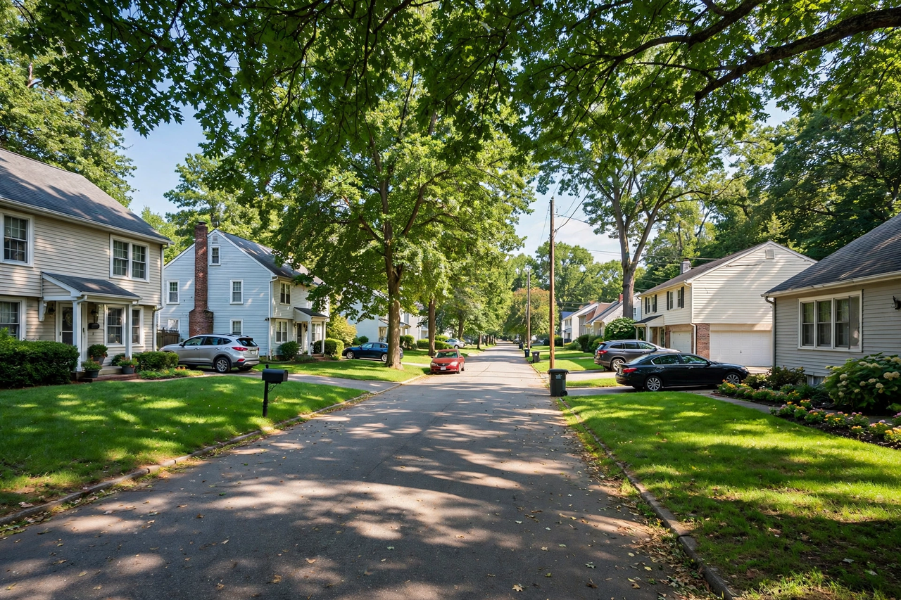

| Middle class | |
 | |
| Position | Between the upper class and the working class |
|---|---|
| Typical markers | Professional or managerial occupation, higher education, home ownership |
The middle class is a class of people in the middle of a society's social hierarchy, between the upper class and the working class. The term is contested: definitions variously emphasise income, occupation, education, wealth or self-identification, and sociologists often subdivide the group into upper-middle and lower-middle class. In common usage it typically denotes professionals, managers, small business owners and skilled white-collar workers who enjoy a comfortable standard of living, own their homes and can afford higher education for their children.
The middle class grew out of the bourgeoisie — merchants, professionals and property owners between the aristocracy and the labouring poor — whose economic weight rose with trade and industrialisation. In 19th-century Britain and France the class became politically dominant, driving events such as France's July Revolution of 1830. The twentieth century saw a vast expansion of salaried white-collar work, and in the post-war decades the middle class became the majority and the norm in most Western societies, underpinned by mass home ownership and university education.
For Marx, the petite bourgeoisie of small owners stood uneasily between capital and labour, while the growth of a salaried "new middle class" complicated class analysis. Max Weber defined class in terms of market situation and status, allowing a more graded picture. Modern sociologists distinguish the professional-managerial salariat from routine non-manual workers, and economists such as Guy Standing argue that globalisation has split off a growing insecure "precariat" below the traditional middle class. Recent debate in the United States and Europe concerns a "squeezed middle": stagnant wages, housing costs and student debt are said to be hollowing out middle-class security, even as the global middle class — especially in Asia — grows rapidly.
Statistical definitions differ by country. The Pew Research Center defines US middle-income households as earning two-thirds to double the median household income. International bodies such as the OECD use a similar band of 75–200% of median income. By such measures, roughly half of US adults are middle income, down from about 61% in 1971.